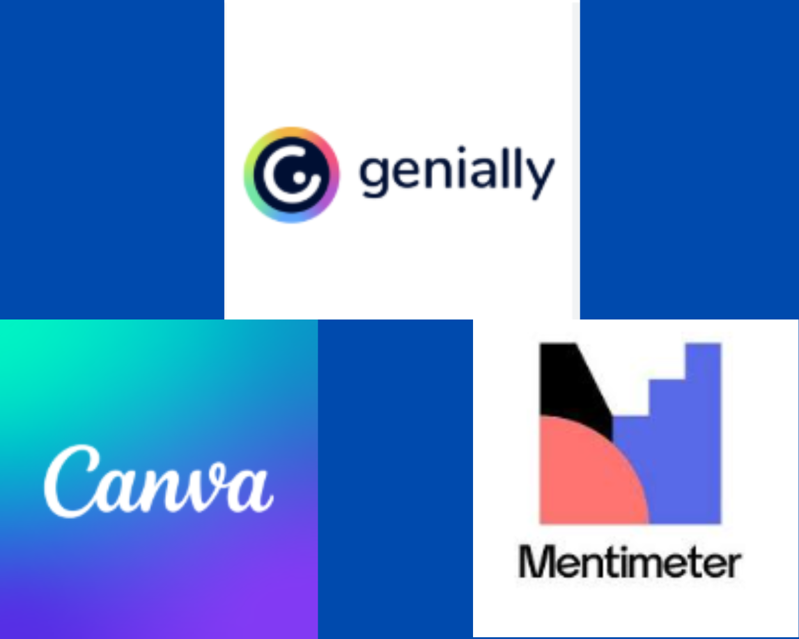

las aplicaciones tecnologicas y como usarlas
en la era digital actual,la creacion de contenido atractivo y interactivo es fundemental
para captar la atencion de las personas. sabiendo esto existen varias herramientas que nos permiten
crear contenido de alta calidad de manera sencilla y eficiente. tales como canva, mentimeter y genially
- CANVA:es una herramienta de diseño grafico en linea que nos permite crear materiales visuales atractivos
y profecionales sin necesidad de tener experiencia en diseño grafico. con su interfaz facil e intuitiva
y gran variedad de plantillas y elementos es ideal para crear presentaciones,infografias, carteles y mas.
- MENTIMETER:es una herramienta de presentacion interactiva que nos permite crear presentaciones dinamicas
y atracivas.con su funcion de votacion en tiempo real y su capacidad para crear preguntas y juegos es ideal
para conferecias,reuniones y clases
- GENIALLY:sirve para crear contenido interactivo como presentaciones,infografias y otros materiales visuales
con elementos interactivos como animaciones, enlaces y mas. a parte es facil de usar y ideal para crear
contenido atractivo para las personas con sus plantillas que tiene faciles de usar
